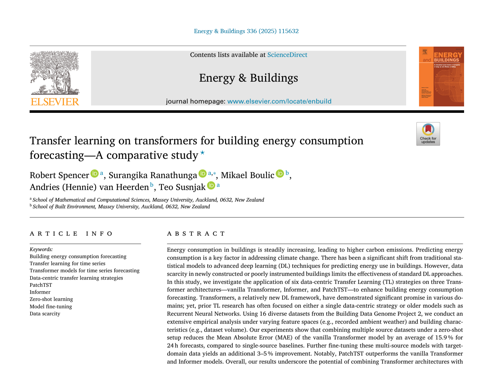
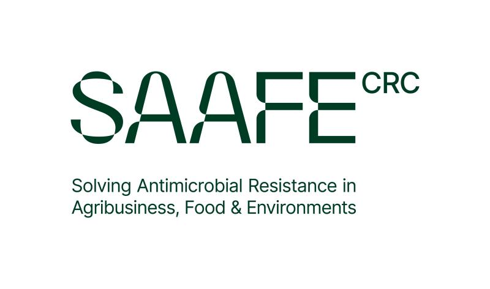
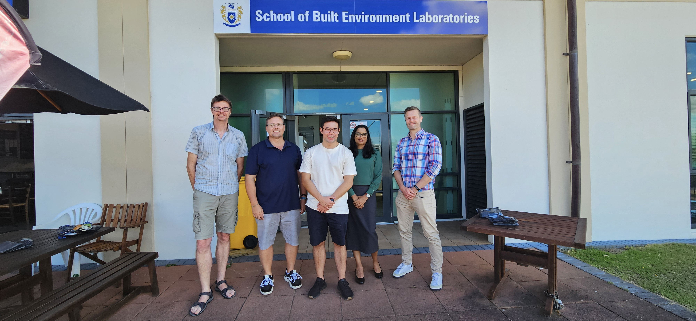
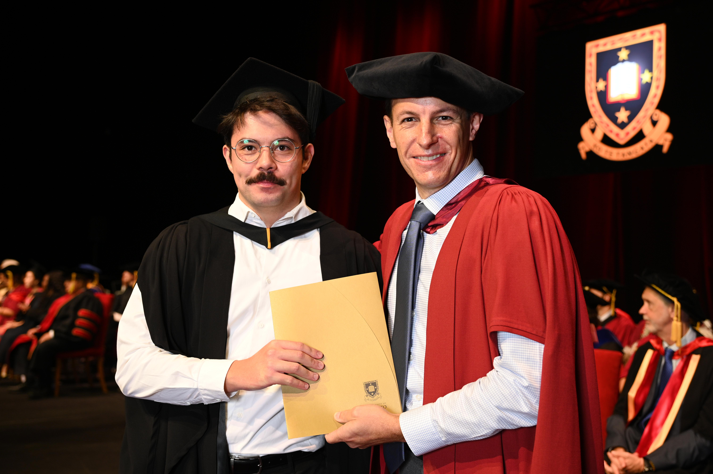

01
Applied machine learning
From forecasting and transfer learning to production workflows, I enjoy building models that are judged by practical usefulness, not novelty alone.
Researcher + Builder
I design applied AI systems for complex, high-stakes problems, spanning digital twins, antimicrobial resistance risk assessment, and production machine learning.
Currently preparing for a PhD in Artificial Intelligence at The University of Queensland after leading end-to-end data science work in industry and publishing first-author research on transformer-based forecasting.

Current research direction
Cross-sectoral digital twins for antimicrobial resistance risk assessment, connecting technical rigour with real-world decision-making.
Overview
My background cuts across health, analytics, and AI engineering. That mix has shaped how I work: I like research that can survive contact with real constraints, and systems that do more than demo well.
I completed a Master of Analytics in Health at Massey University, am concurrently undertaking a Master of Computer Science in AI at Monash University, and will begin a fully funded PhD at The University of Queensland in April 2026. Both universities have approved concurrent enrolment in the Monash masters and the UQ PhD.
The throughline is consistent: take messy domains, structure them well, and build models, pipelines, and tools that lead to better decisions.
Focus Areas
01
From forecasting and transfer learning to production workflows, I enjoy building models that are judged by practical usefulness, not novelty alone.
02
I am especially interested in digital twins as a way to integrate multiple sectors, uncertain signals, and high-impact decisions into one workable modelling frame.
03
My industry work has centred on dashboards, internal tooling, pipelines, and decision-support systems that teams adopt because they remove real friction.
Selected Proof
Research
My first-author paper in Energy and Buildings compared transformer architectures across 16 building datasets and demonstrated a 15.9% improvement in MAE for 24-hour forecasts using a multi-source transfer learning approach.

Industry
At Radix Nutrition, I led data science work spanning optimisation, claims substantiation, and internal product tooling. The result was faster iteration, lower formulation costs, and decision support adopted across R&D and operations.
Build
I use this site, GitHub, and YouTube to document projects, share technical lessons, and make my thinking legible. I care about being able to show the work, not just list it.
Journey
I did not begin in computer science. Coming from health, sport, and human performance gave me a bias toward problems with real-world consequences, messy variables, and multidisciplinary stakeholders.
That perspective still shapes my work today. I am most energised when a project needs both technical depth and translation across disciplines.

Fully funded RTP scholarship and SAAFE CRC top-up focused on cross-sectoral digital twins for AMR risk assessment.
Part-time, online; deepens formal AI training alongside research and industry work. Completed nine of twelve units with remaining coursework planned around doctoral milestones.
Joined as the first technical hire (Data Analyst, Apr 2024–Jan 2025), building data infrastructure and internal tools; promoted to Lead Data Scientist (Jan–Oct 2025), owning end-to-end AI and analytics for formulation, substantiation, and decision support.

Transformer-based forecasting and transfer learning for building energy prediction; first-author Q1 publication in Energy and Buildings.

Completed with Distinction; health analytics and methods training concurrent with the RA appointment.

Double majors in Human Performance Science and Community Health — the grounding in health, messy real-world data, and stakeholder context that still informs how I frame technical work.
Online Presence
On YouTube and online, I talk about career transitions into AI, the tools and models I use day to day, and the practical side of building technical capability over time.
The throughline is the same as my research and engineering work: curiosity, usefulness, and a bias toward making complex ideas easier to work with.
Connect
I'm always happy to connect with people working in artificial intelligence, health, complex systems, sustainability, and thoughtful technical communication.